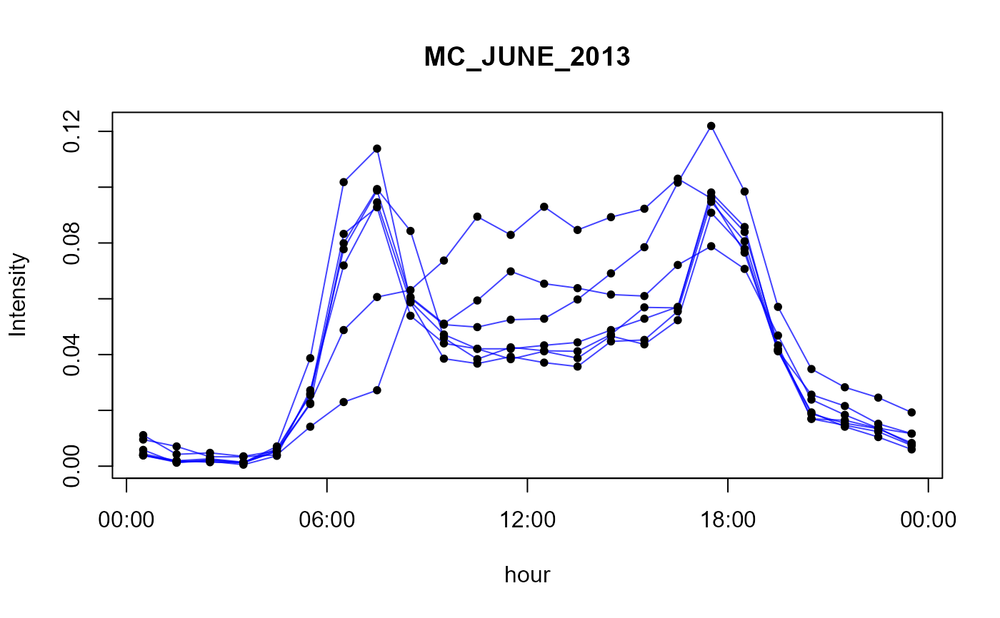
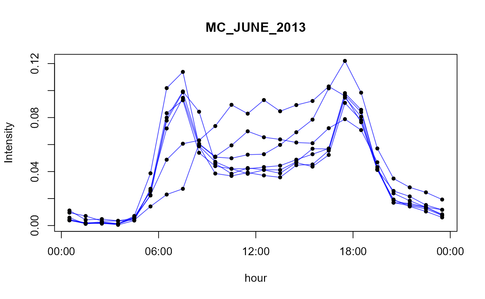
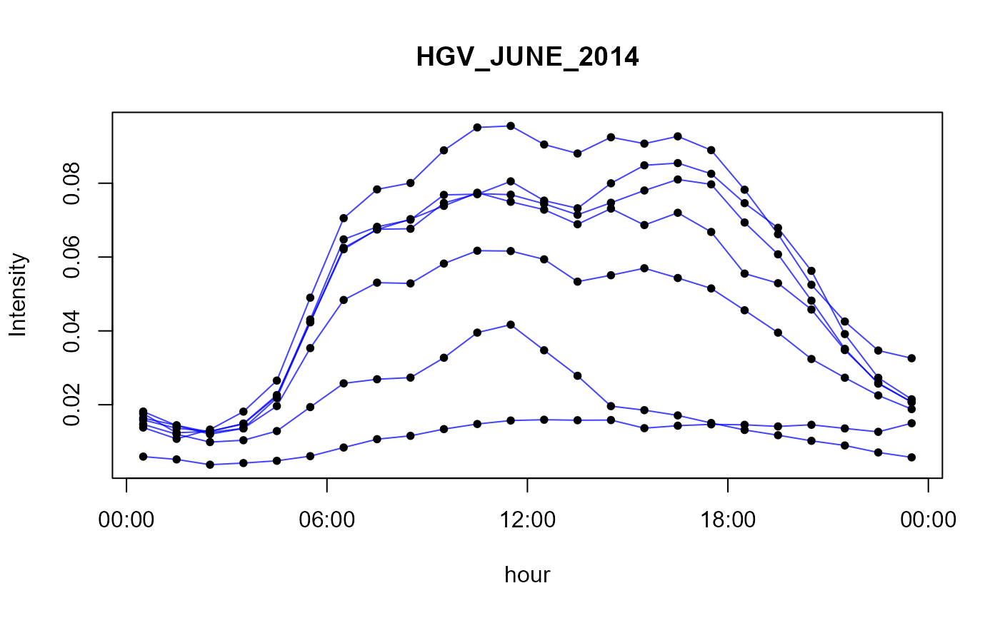
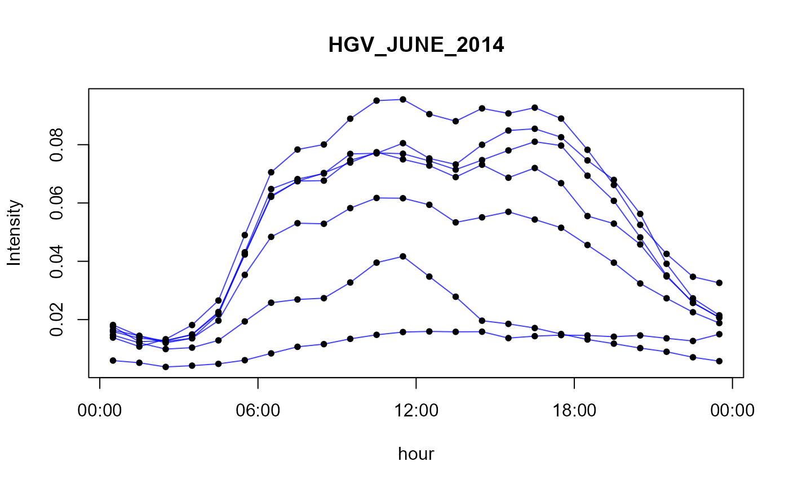
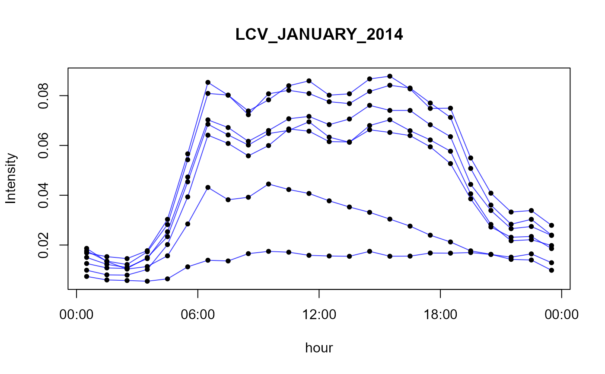
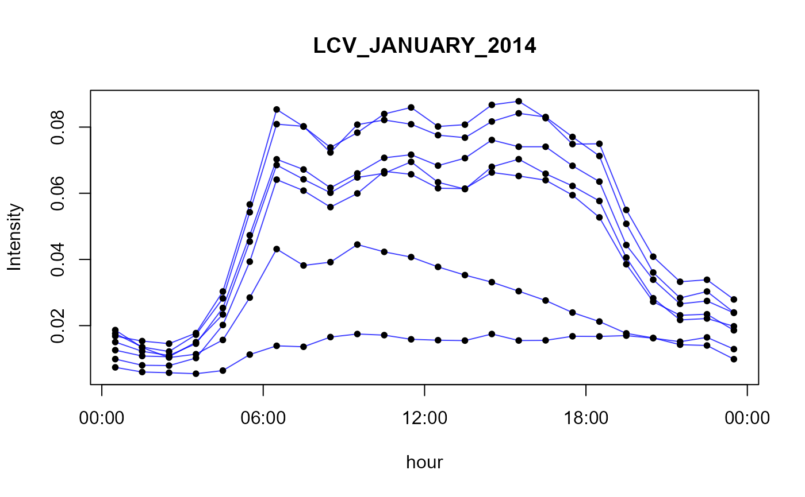
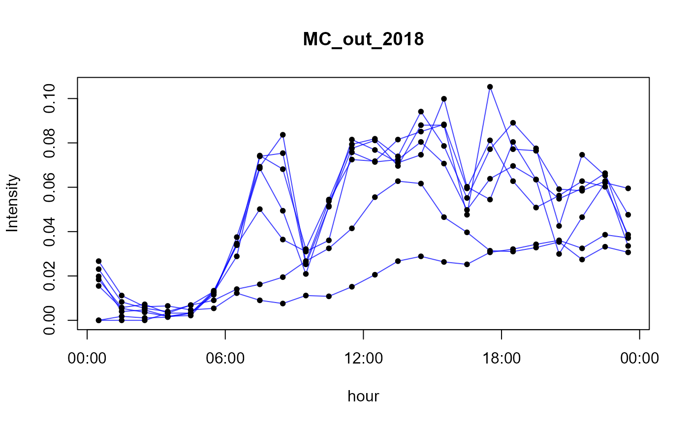
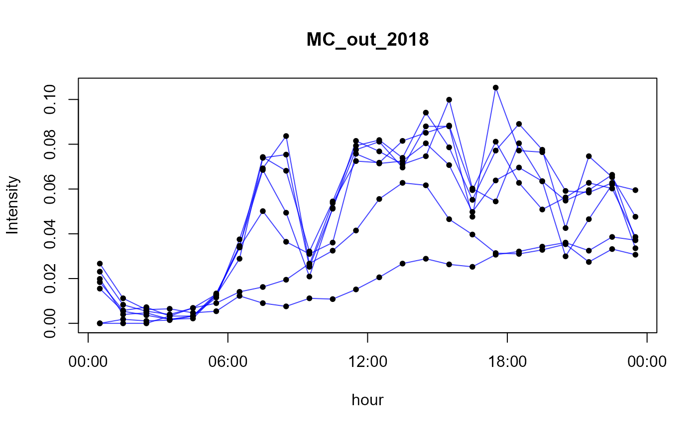

Set of hourly profiles that represents the mean activity for each hour (local time) of the week.
- LDV
Light Duty vehicles
- HDV
Heavy Duty vehicles
- PC_JUNE_2012
passenger cars counted in June 2012
- PC_JUNE_2013
passenger cars counted in June 2013
- PC_JUNE_2014
passenger cars counted in June 2014
- LCV_JUNE_2012
light comercial vehicles counted in June 2012
- LCV_JUNE_2013
light comercial vehicles counted in June 2013
- LCV_JUNE_2014
light comercial vehicles counted in June 2014
- MC_JUNE_2012
motorcycles counted in June 2012
- MC_JUNE_2013
motorcycles counted in June 2013
- MC_JUNE_2014
motorcycles counted in June 2014
- HGV_JUNE_2012
Heavy good vehicles counted in June 2012
- HGV_JUNE_2013
Heavy good vehicles counted in June 2013
- HGV_JUNE_2014
Heavy good vehicles counted in June 2014
- PC_JANUARY_2012
passenger cars counted in january 2012
- PC_JANUARY_2013
passenger cars counted in january 2013
- PC_JANUARY_2014
passenger cars counted in january 2014
- LCV_JANUARY_2012
light comercial vehicles counted in january 2012
- LCV_JANUARY_2013
light comercial vehicles counted in january 2013
- LCV_JANUARY_2014
light comercial vehicles counted in january 2014
- MC_JANUARY_2012
Motorcycles counted in january 2012
- MC_JANUARY_2014
Motorcycles counted in january 2014
- HGV_JANUARY_2012
Heavy good vehicles counted in january 2012
- HGV_JANUARY_2013
Heavy good vehicles counted in january 2013
- HGV_JANUARY_2014
Heavy good vehicles counted in january 2014
- POW
Power generation emission profile
- IND
Industrial emission profile
- RES
Residencial emission profile
- TRA
Transport emission profile
- AGR
Agriculture emission profile
- SHP
Emission profile for ships
- SLV
Solvent use emission constant profile
- WBD
Waste burning emisssion constant profile
- PC_nov_2018
passenger cars at Janio Quadros on November 2018
- HGV_nov_2018
heavy good vehicles at Janio Quadros on November 2018
- TOTAL_nov_2018
total vehicle at Janio Quadros on November 2018
- PC_out_2018
passenger cars at Anhanguera-Castello Branco on October 2018
- MC_out_2018
Motorcycles cars at Anhanguera-Castello Branco on October 2018
Usage
data(perfil)Details
- Profiles 1 to 2 are from traffic count at São Paulo city from Perez Martínez et al (2014).
- Profiles 3 to 25 comes from traffic counted of toll stations located in São Paulo city, for summer and winters of 2012, 2013 and 2014.
- Profiles 26 to 33 are for different sectors from Oliver et al (2003).
- Profiles 34 to 36 are for volumetric mechanized traffic count at Janio Quadros tunnel on November 2018.
- Profiles 37 to 38 are for volumetric mechanized traffic count at Anhanguera-Castello Branco on October 2018.
Note
The profile is normalized by days (but is balanced for a complete week) it means diary_emission x profile = hourly_emission.
References
Pérez-Martínez, P. J., Miranda, R. M., Nogueira, T., Guardani, M. L., Fornaro, A., Ynoue, R., & Andrade, M. F. (2014). Emission factors of air pollutants from vehicles measured inside road tunnels in São Paulo: case study comparison. International Journal of Environmental Science and Technology, 11(8), 2155-2168.
Olivier, J., J. Peters, C. Granier, G. Pétron, J.F. Müller, and S. Wallens, Present and future surface emissions of atmospheric compounds, POET Report #2, EU project EVK2-1999-00011, 2003.
Examples
# load the data
data(perfil)
# \donttest{
# function to simple view
plot.perfil <- function(per = perfil$LDV, text="", color = "#0000FFBB"){
plot(per[,1],ty = "l", ylim = range(per),axe = FALSE,
xlab = "hour",ylab = "Intensity",main = text,col=color)
for(i in 2:7){
lines(per[,i],col = color)
}
for(i in 1:7){
points(per[,i],col = "black", pch = 20)
}
axis(1,at=0.5+c(0,6,12,18,24),labels = c("00:00","06:00","12:00","18:00","00:00"))
axis(2)
box()
}
# \donttest{
# view all profiles in perfil data
for(i in 1:length(names(perfil))){
cat(paste("profile",i,names(perfil)[i],"\n"))
plot.perfil(perfil[[i]],names(perfil)[i])
}
#> profile 1 LDV
 #> profile 2 HDV
#> profile 2 HDV
 #> profile 3 PC_JUNE_2012
#> profile 3 PC_JUNE_2012
 #> profile 4 PC_JUNE_2013
#> profile 4 PC_JUNE_2013
 #> profile 5 PC_JUNE_2014
#> profile 5 PC_JUNE_2014
 #> profile 6 LCV_JUNE_2012
#> profile 6 LCV_JUNE_2012
 #> profile 7 LCV_JUNE_2013
#> profile 7 LCV_JUNE_2013
 #> profile 8 LCV_JUNE_2014
#> profile 8 LCV_JUNE_2014
 #> profile 9 MC_JUNE_2012
#> profile 10 MC_JUNE_2013

#> profile 11 MC_JUNE_2014
#> profile 9 MC_JUNE_2012
#> profile 10 MC_JUNE_2013

#> profile 11 MC_JUNE_2014
 #> profile 12 HGV_JUNE_2012
#> profile 12 HGV_JUNE_2012
 #> profile 13 HGV_JUNE_2013
#> profile 13 HGV_JUNE_2013
 #> profile 14 HGV_JUNE_2014

#> profile 15 PC_JANUARY_2012
#> profile 14 HGV_JUNE_2014

#> profile 15 PC_JANUARY_2012
 #> profile 16 PC_JANUARY_2013
#> profile 16 PC_JANUARY_2013
 #> profile 17 PC_JANUARY_2014
#> profile 18 LCV_JANUARY_2012
#> profile 19 LCV_JANUARY_2013
#> profile 20 LCV_JANUARY_2014

#> profile 21 MC_JANUARY_2012
#> profile 17 PC_JANUARY_2014
#> profile 18 LCV_JANUARY_2012
#> profile 19 LCV_JANUARY_2013
#> profile 20 LCV_JANUARY_2014

#> profile 21 MC_JANUARY_2012
 #> profile 22 MC_JANUARY_2014
#> profile 23 HGV_JANUARY_2012
#> profile 22 MC_JANUARY_2014
#> profile 23 HGV_JANUARY_2012
 #> profile 24 HGV_JANUARY_2013
#> profile 24 HGV_JANUARY_2013
 #> profile 25 HGV_JANUARY_2014
#> profile 25 HGV_JANUARY_2014
 #> profile 26 POW
#> profile 26 POW
 #> profile 27 IND
#> profile 27 IND
 #> profile 28 RES
#> profile 28 RES
 #> profile 29 TRA
#> profile 29 TRA
 #> profile 30 AGR
#> profile 30 AGR
 #> profile 31 SHP
#> profile 31 SHP
 #> profile 32 SLV
#> profile 33 WBD
#> profile 32 SLV
#> profile 33 WBD
 #> profile 34 PC_nov_2018
#> profile 34 PC_nov_2018
 #> profile 35 HGV_nov_2018
#> profile 35 HGV_nov_2018
 #> profile 36 TOTAL_nov_2018
#> profile 36 TOTAL_nov_2018
 #> profile 37 PC_out_2018
#> profile 38 MC_out_2018

# }
# }
#> profile 37 PC_out_2018
#> profile 38 MC_out_2018

# }
# }